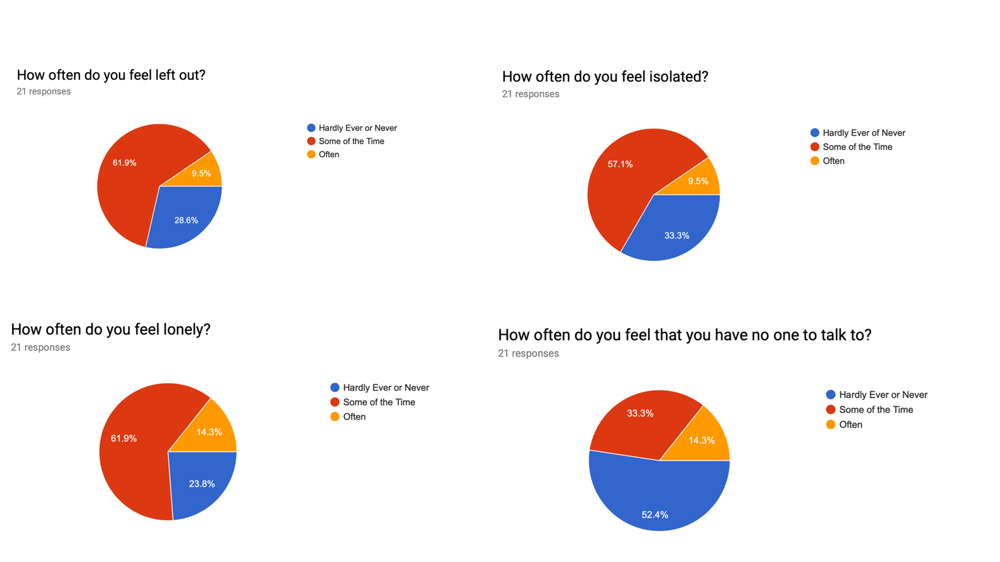
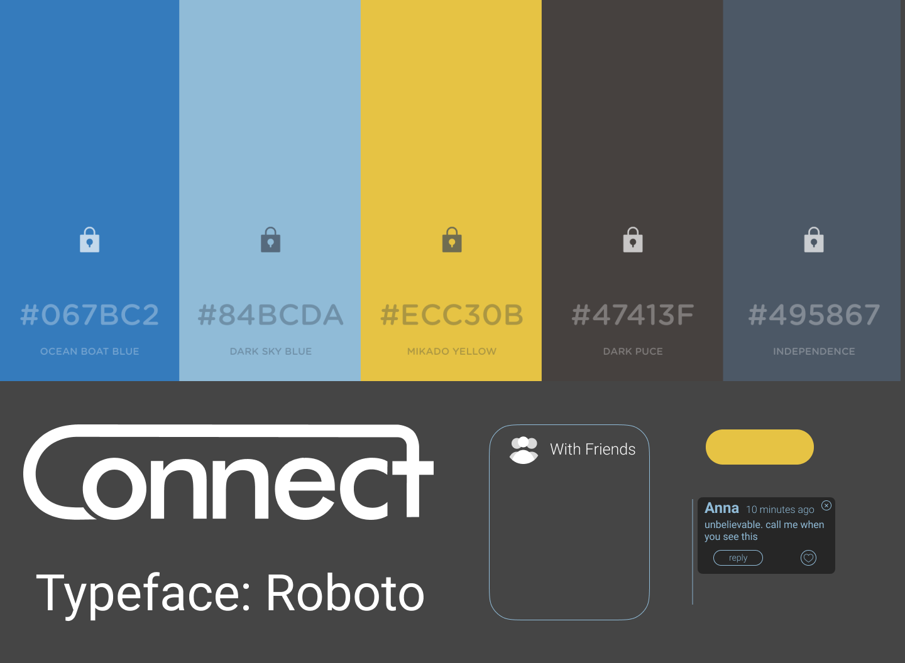

Context This group project was completed for an interaction design course We were given an
open-ended design brief about loneliness at the beginning of our project.
Loneliness can be defined as ‘the gap between someone’s desire for connection and the
reality of their connections.’ The goal of our project was to account for how different
groups in society are affected by loneliness and design a way to reduce its impact.
Design Problem Loneliness affects many members of society and college age students experience loneliness in unique
ways.
Through our project we aimed to account for how a specific group in society, college age
students, are affected by loneliness and design a way to reduce its impact.
Solution This is where Connect comes into play: an application that helps connect people all over the world through the.
The Process
Research
Research Method Design
Data Collection
Analysis
Data Analysis
Research Results & Conclusions
Personas
Design
Design Ideation
Idea Convergence
Prototyping
Final Product
Research Research Method Design
In order to triangulate our data, we decided to use three methods of data collection: an
initial survey, a time diary study, and de-brief interviews. The survey was used to help us
get an initial understanding of our users’ loneliness, the time diary study showed us specific
ways our users experience loneliness, and the debrief interviews helped us unpack those specific
instances and emotions. We used these three methods to get a well-rounded view of how loneliness
fits into and affects our users.
Data Collection Methods Survey The first step in our study was to conduct an initial survey. We distributed this survey to five
universities on both the east and west coasts and were able to collect responses from 21 individuals.
We asked the participants some demographic information, questions about their current social environments,
and four main questions about their loneliness levels.
How often do you feel left out?
How often do you feel isolated?
How often do you feel lonely?
How often do you feel like you have no one to talk to?

Time Diary
The diary study was the next step in our research process. This portion consisted of 10 participants and was used to get a day by day detailing
of each person’s daily routine and the points in their day that they experience loneliness the most. We wanted to see if there was any correlation
between their daily activities/stressors and their levels of loneliness. Based on our initial research and our screener questionnaire, we felt that a
person’s loneliness was often dependent on what the person was doing on that particular day. Our rationale for a daily diary study with check-ins every
four hours was that it would give us the best and most full picture of that person’s feelings and emotions throughout the day and at each activity.
Debrief Interview
The last step was to conduct debrief interviews. This was essential to get a deeper understanding on the logic behind our participants answers
as well as figuring out what coping mechanisms they use. We thought that by adding in a debrief interview we would be able to triangulate our
data and get a holistic view of how loneliness fits into our participants lives. In our debrief interview with participants we discussed:
Their highest loneliness activities
Their coping methods for loneliness
Activities where they felt the least lonely
Their responses to the initial screener survey questions
If there are any services that they wish were available to them on (or off) campus to help cope with loneliness
Their response to our questions about counseling services in the initial screener survey
Analysis Data Analysis Before speaking with each participant we reviewed their initial questionnaire and their time diary profile.
We were then able to use their information to ask them personalized questions about their unique feelings of loneliness
and the causes and pressures that affected them.
When the study was over we were able to take the data from the study and build out individual profiles for each user.
We gave each participant their own excel sheet and aggregated all their data from the time diary in one place. We were then
able to see how their loneliness progressed through the week and what activities were reported as most lonely. We were also
able to flip through the profiles and see what activities registered as the most lonely across all participants. We found there
was three main activities that reported the highest levels of loneliness: netflix, meals, and free time.
After each interview, we conducted debrief sessions with our team and were able to start noticing patterns across our series of
interviews. Specifically, we started noticing that while each user had a unique setting, there was patterns across the board in
the various triggers and coping mechanisms.
Research Results & Conclusions In our research we found three common triggers of loneliness in our group of participants:
People experience loneliness in between activities more than during the activities themselves.
People experience loneliness when there is a lull in activity.
People experience loneliness when they’re in a new situation.
“It’s difficult being in a different environment.”
- U8 on their transition into graduate school
Additionally, we noticed three common coping mechanisms for loneliness:
Watching media (netflix, hulu, youtube) to fill empty time.
“I have a busy schedule and when there is a lull in my day I begin to feel lonely so I like to watch hulu or youtube to fill my time.” -U10
Being busy or unproductive.
"When I’m studying I don't have the mental space for loneliness.The productivity is positive and the loneliness doesn’t creep in." - U6
Reaching out to friends for meals.
It is from these conclusions that we drew inspiration for our design ideas.
Personas
We built two personas based on the data that we gathered. These personas helped our team in the ideation stage of design by being a
consolidated representation of our research findings.
Design Design Ideation The design process began with ideation, 20 sketches were created by each team member for a total of 60 sketches. These sketches were
developed based on the knowledge gained from our previous research. Below are some examples of sketches that we made as well as the sketch
that inspired our final idea to begin prototyping.
To narrow down and consolidate our sketches we grouped them together by theme and then employed a digital dot voting method to decide on a
final design idea. The final two ideas were 1) an availability application to show when someone is free to hang out and 2) a collaborative
show-watching application.
Ultimately our team voted to build a collaborative show-watching application because we believed this could be a unique way to connect people
who are not in person with each other. The application could provide a channel of asynchronous communication, and capitalized on feedback that
we had received from our interviews and diary studies.
“I feel like loneliness stems from an emotional state when I want to talk to someone but I don’t have anyone to talk to.” - U10 on
wanting to connect with people who aren’t near her
Some form of visual entertainment (netflix, youtube, movies) was mentioned in 9 of the 10 respondents, by integrating an asynchronous
communication into our app we can help friends connect to one another even when they are not physically able to. In the following section
we discuss our prototype and our design rationale.
Idea Convergence After narrowing down our big picture design ideas, we started to think through how we could effectively approach and build a
collaborative entertainment experience. While we had a big picture idea of what we wanted to build, there was a lot of fine grain
details we needed to think through. The first step we took was to look through the design ideas we did not select, and see what features and principles we could incorporate
into this final idea. We also spent a lot of time sifting back through our interviews to see what features would address the problems
associated with loneliness and entertainment. We decided on incorporating three main parts into the application: asynchronous comments,
watch live, and friends availability status.
Prototyping
Low Fidelity When we began working on our initial prototype, we began brainstorming how we wanted all of our parts to come together. We decided that we
wanted to achieve the following goals through our design:
Creating an intuitive experience with great learnability potential
Making it easy for people to connect with their friends
Have the ability to fully customize their experience without it feeling overwhelming with too many options
With those goals in mind we went straight to the whiteboard and mapped out the important features we would need to create a finished
project that met those objectives.
We then drew out our prototype on the whiteboard to iterate on the layouts and user flow and simply translated it to a paper prototype. Usability TestingAfter we created our low-fidelity prototype we performed one pilot test. This was a full run through of the prototype to see if there were any
problems with our technique as well as to get practice conducting a test.
We also performed three official usability tests. These tests were
conducted so we could receive feedback on our design, identify pain points, and make necessary improvements.
We received some positive feedback:
“I think this is a good idea and it is so exciting that you can do this with people, I really like the idea and everything happening so far” -User Tester 1
“I would use this service because I like to talk to people about tv shows I enjoy. I think with current shows this really comes into play” -User Tester 2
“I would probably use this with my long distance boyfriend, college friends, and grad school friends” -User Tester 3
And we received some helpful critiques:
"In regards to the settings option I would change the hierarchy of the way things are displayed” -User Tester 1
“How would I invite friends to watch a show while I’m watching that show? I wouldn’t want to have to leave my show in
order to perform that action.” -User Tester 2
“I would really like the option to let my friend know why I declined her watch invite, I don’t want to be rude” -User Tester 3
Taking these comments into consideration, we made many changes to our final low-fidelity prototype by applying the changes that we
thought would transform our users experience. We used this updated low-fi prototype to create our medium fidelity prototype.
Wireframes and Medium Fidelity
We divided our prototype into three sections, and each wireframed our given section. After the wireframes were complete, we created a styleguide
with our color palette, typeface, the way our assets would look such as the shape of buttons, etc and began working on designing our final product.

Wireframes
We wireframed our product to set a roadmap and create a standard so everyone in the group knew the overall design plan
Final Product
Our final prototype in action.
Sign Up - Subscriptions The sign up process gives the user the ability to select their particular subscriptions.
Sign Up - Preferences The sign up process gives the user the ability to add their preferences based on genre, favorite actor, and more.
Connect With Friends This is where users can select the friends they want to add to their friend's list as well as search and invite friends to the platform
that may not have an account yet.
The Dashboard The dashboard gives the user suggestions based on their preferences, friends, and recently watched.
The Inbox & Friends List There is an inbox, where users can see the messages they have recieved as well as their friend's
responses to the comments. There is also the user's friends list where active friends have a green light and friends
who are currently watching a show or movie have a blue light. Selecting a person allows you to invite them
to watch something or chat.
Watch Preferences Selecting a show reveals more details about the show, as well as allows users to choose how they
want to watch their show: with friends, with comments, or alone
While Watching When users click play, they are taken to their show with many options. The user can view comments, depicted by blue bubbles,
make a comment depicted by the yellow circle, adjust their settings, and livechat.
To view our final prototype on Figma, click below: